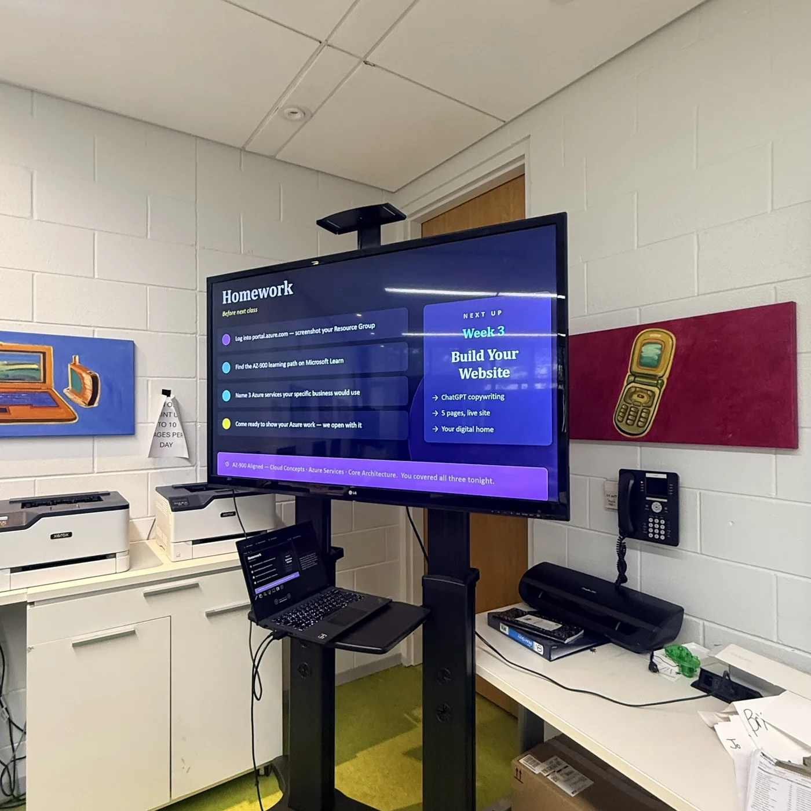
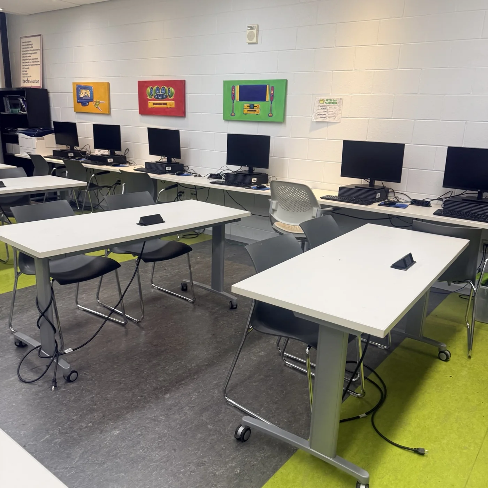
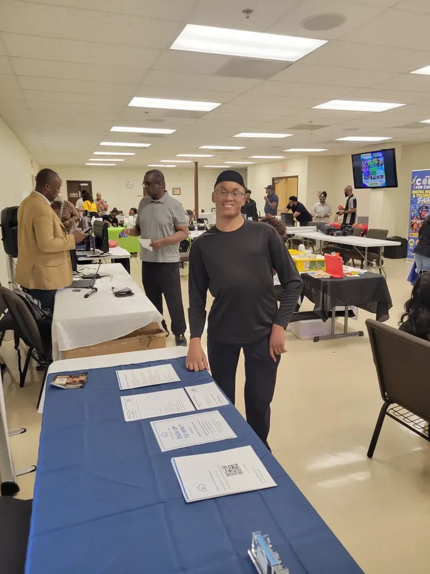

In-Person Facilitator
Lead classroom sessions in community and workforce environments with structured in-person support.
Recruiting instructorsHelp learners build practical skills and confidence. We recruit experienced instructors for community, in-person, and live virtual classes, including subjects beyond our existing catalog.
Current recruitment priority: Website Building / HTML instructor for proposed upcoming classes with Aziz at the sports complex. We also welcome experienced instructors across technology, workforce readiness, and other disciplines—even subjects not yet in our catalog. Class scheduling and instructor assignments are subject to confirmation.
Help beginners learn HTML, CSS, basic website structure, and how to publish a simple website. We are recruiting for anticipated community classes with Aziz at the sports complex; dates, location details, and staffing will be confirmed before any assignment.
Ideal background: practical website development, teaching or facilitation experience, patient beginner-friendly instruction, and ability to lead hands-on exercises.
Express Interest in Website / HTML RoleAlready teach something well? Tell us your subject expertise, audience, certifications or work experience, teaching format (in person, virtual, or both), location, and availability. We are exploring new subjects beyond our current cloud, AI, and cybersecurity offerings.
Share Your Expertise
Lead classroom sessions in community and workforce environments with structured in-person support.
Recruiting instructors
Teach remote cohorts, run office hours, and support learner milestones through live instruction and feedback cycles.

Improve lesson quality, assessment strategy, and pathway consistency across cloud, AI, and cybersecurity tracks.
Select a role above to open the dedicated form with role-specific questions, requirements, and onboarding information.
General hiring questions: thedopecloudteacher@gmail.com.